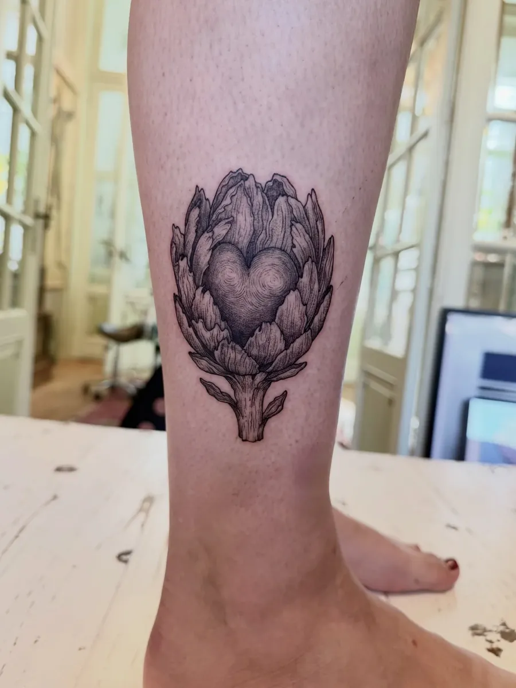
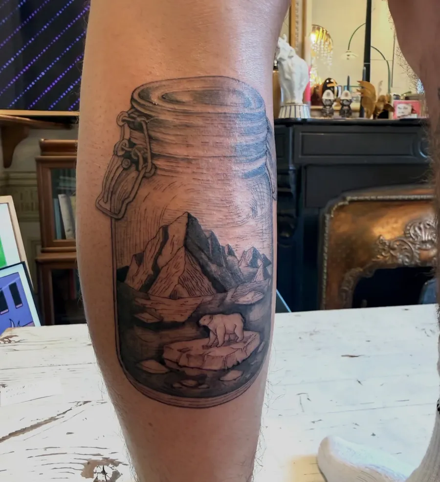
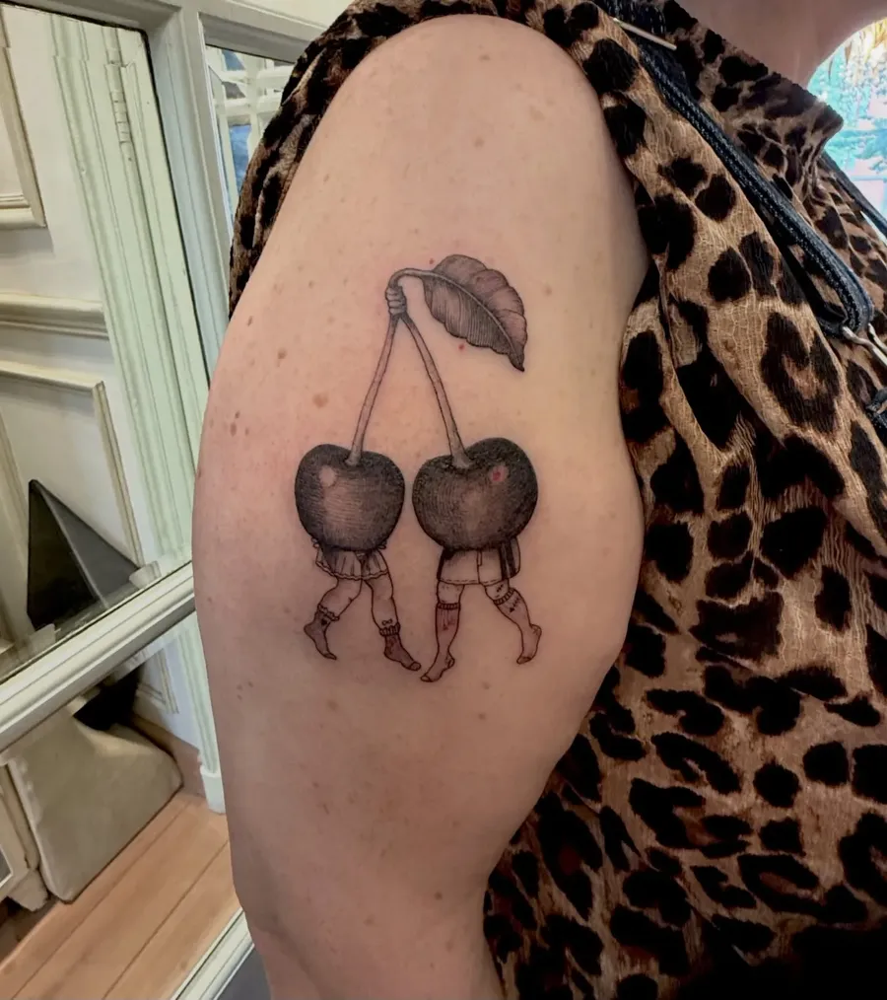
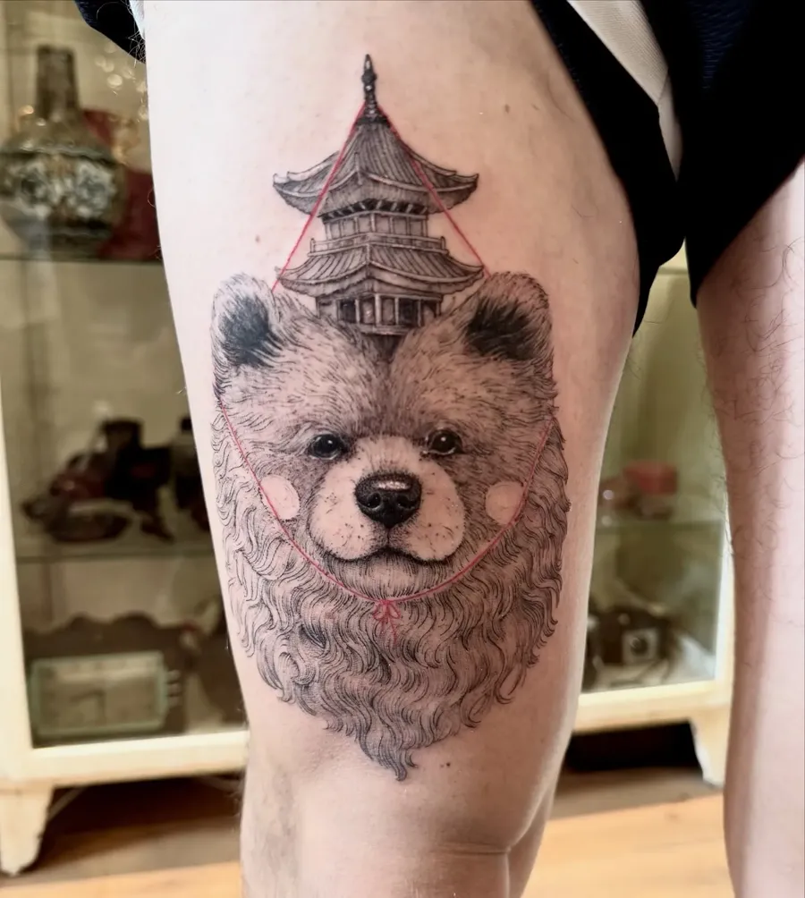
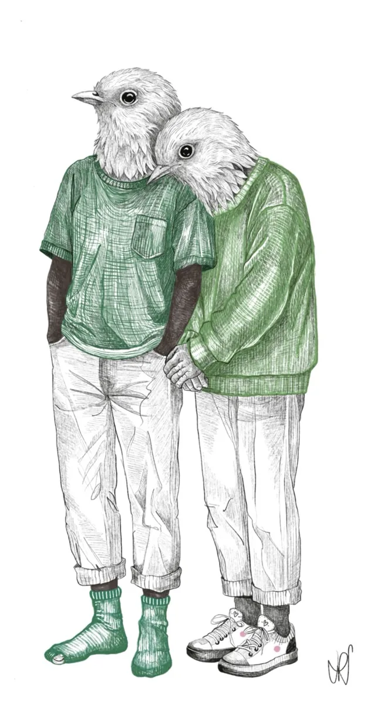
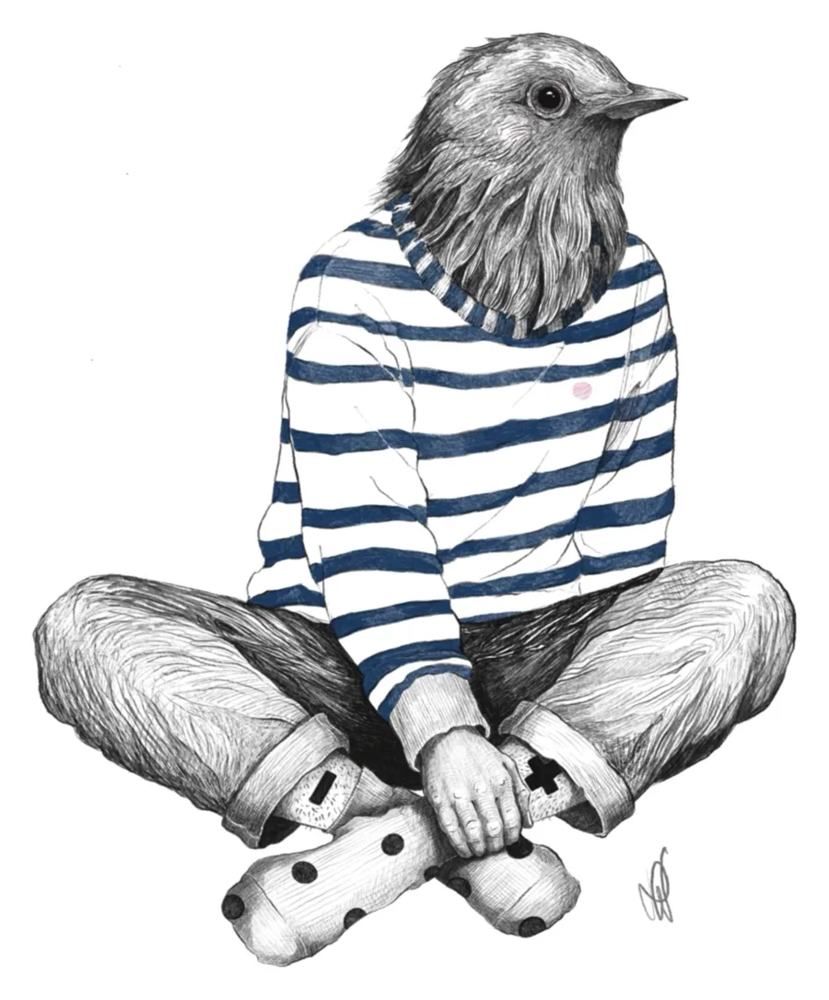
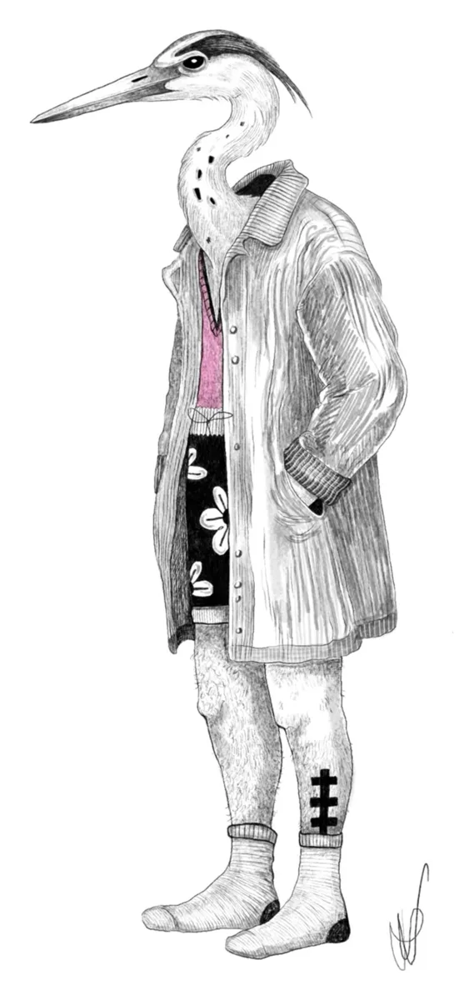
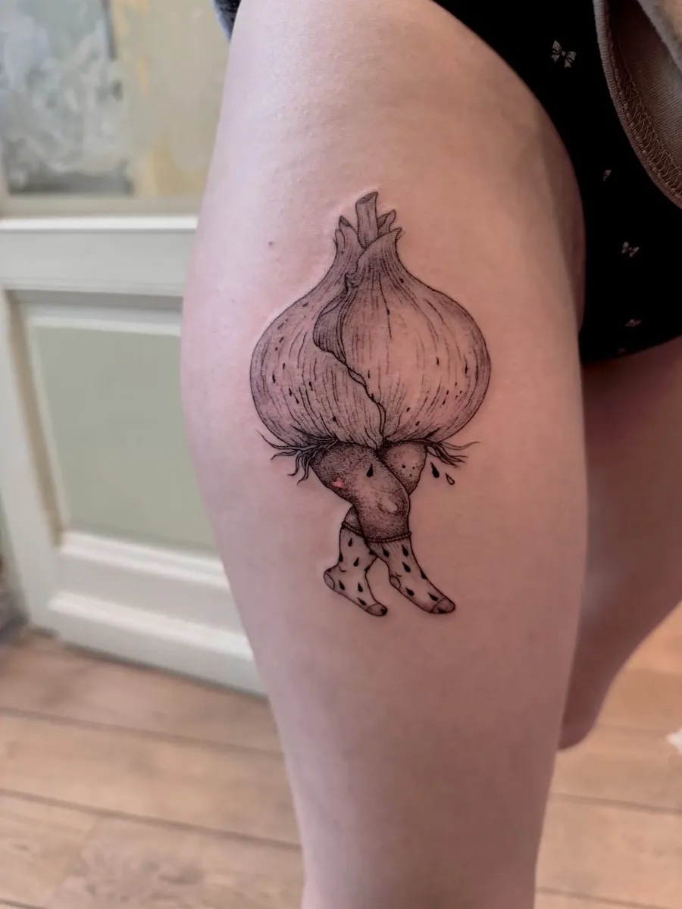
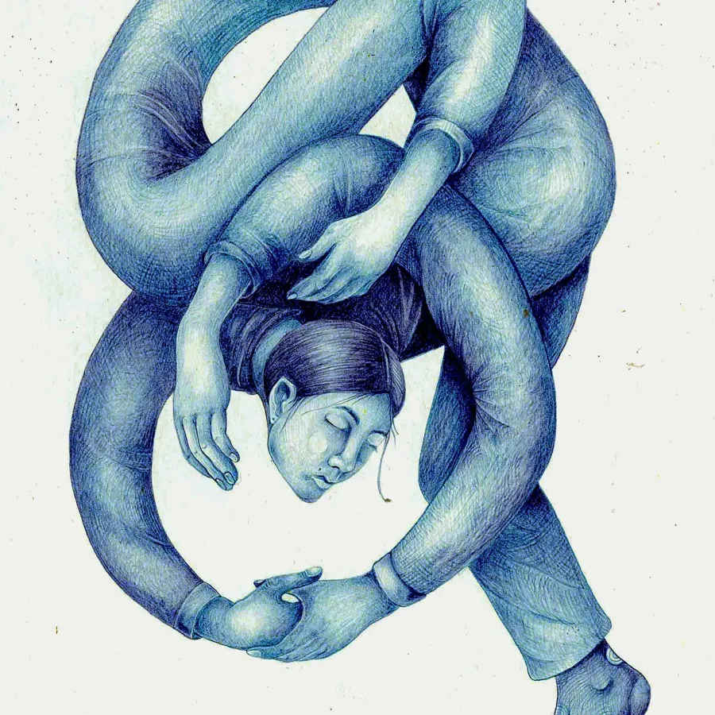
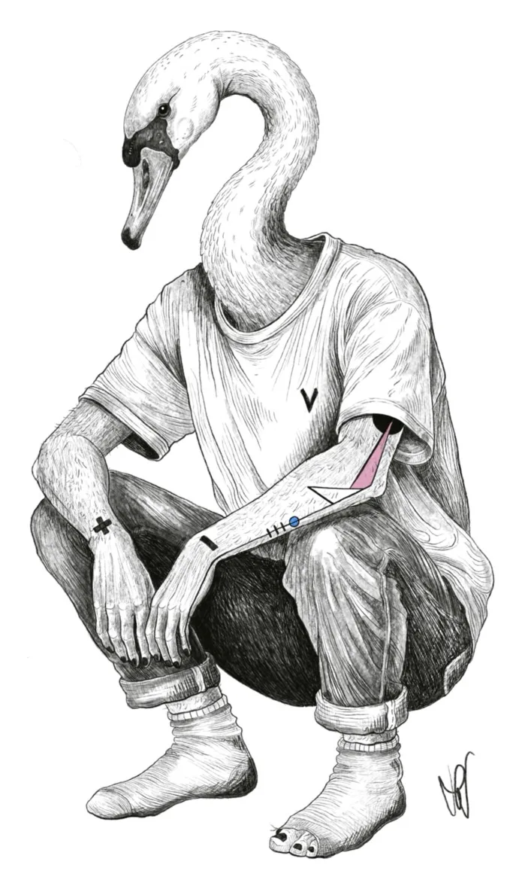

Kleine verhalen op de huid.
Fijn lijnwerk en zachte schaduw, meestal in zwart en grijs, soms met een vleugje kleur. Een bever met een hart voor iemands eerste tattoo, bergen in een bokaal, twee schelpjes met een gezichtje. Mijn ontwerpen teken ik zelf.








Zie je er een die je wil? Claim hem.
Tussen de afspraken door teken ik flash: kant-en-klare ontwerpen die je kan claimen. Vogels in kleren, vissen, en een reeks met onze eigen gezegdes.
Nieuwe flash verschijnt eerst op Instagram.
Claim een ontwerp
Lovebirds

Vogel in streepjestrui

Reiger op wandel

Een gegeven paard

De kat uit de boom kijken

Met je hoofd in de wolken

Zo gaat het in zijn werk.
- 1Mail me je ideeVertel wat je in gedachten hebt, waar het moet komen en hoe groot. Een foto of referentie helpt. Afspraken maak ik enkel via mail.
- 2Even geduldEen antwoord kan tot twee weken duren. Even geduld dus, het komt.
- 3Een voorschot vastleggenJe datum ligt vast met een voorschot. Dat krijg je niet terug, maar het gaat wel af van de prijs van je tattoo.
- 4Rustig zetten, en nazorgWe nemen de tijd, ook voor uitleg. Je krijgt mee hoe je je tattoo goed laat genezen.
Vroeger een echte shop. Nu een atelier aan huis.
Ik werkte altijd in een echte tattooshop. Hoe langer ik tattoo, hoe meer ik hou van rust. Die rust kan ik je geven in mijn private studio: een mooi oud huis met een atelier, midden in Gent.
Naast tattoos teken ik, vaak met blauw potlood, en maak ik keramiek.
Ik hou van mijn job, elke dag. En dus hou ik van jullie. Zonder jullie geen tattoos.Helen

In de knoop zitten, potloodtekening
Veilig, welkom en op je gemak.
Ik heb een maand geleden voor het eerst bij Helen een tattoo laten plaatsen. Superduidelijke uitleg, overleg, advies, ... alles was top! Ik voelde me erg veilig en welkom!
Helen is een superlieve madam waar ik me meteen op m'n gemak bij voelde. Ze heeft geduld, luistert aandachtig naar wat je precies wilt, en geeft daarbij ook stap per stap heel gedetailleerd uitleg.
Fantastische ervaring bij Helen, heel aangename en gezellige sfeer. Zeer content van haar werk, ik kijk al uit naar de volgende sessie.
Zachte, warme ontvangst. Prachtige plek. Heel mooi resultaat.Goeie zorg. Dank je wel!
Vertel me wat je in gedachten hebt.
Afspraken maak ik enkel via mail. De studio is bij mij thuis, en daar werk ik in alle rust.
Sluizeken 9, 9000 Gent
